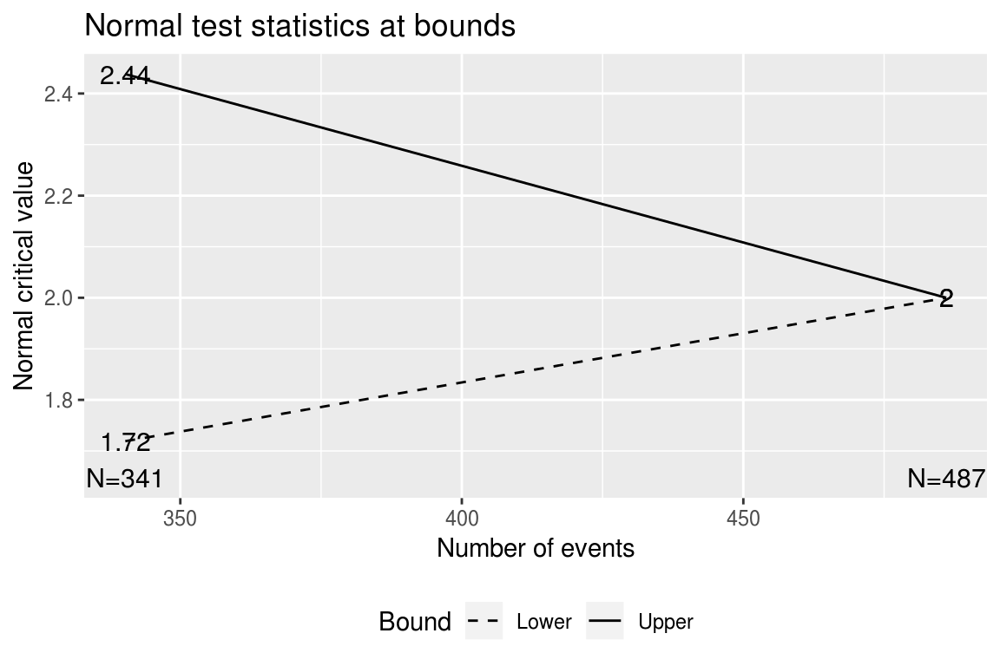
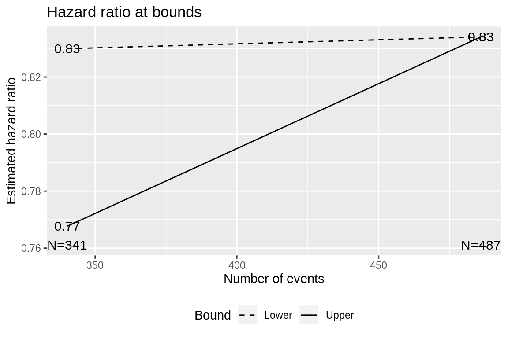

SpendingTime.RmdThis vignette provides examples demonstrating uses of spending time, a concept introduced in version 3.0-4. One simple example of this is by plugging a calendar time fraction into an \(\alpha\)-spending function rather than an information fraction. However, the concept is more general than this and may apply to other situations that will be demonstrated below. The situations we will consider are:
# code here applies to both fixed and group sequential design sections below.
# name of primary endpoint and time units
ep <- "overall survival"
timename <- "months"
timename1 <- "month"
# enrollment period durations; the last of these will be extended if T=NULL below
R <- c(1,2,3,4)
# relative enrollment rates during above periods
gamma<-c(1,1.5,2.5,4)
# study duration
# T can be set to NULL if you want to
# fix enrollment and vary study duration
T <- 36
# follow-up duration of last patient enrolled
minfup <- 12
# randomization ratio, experimental/control
ratio <- 1
# median control time-to-event
median <- 12
# exponential dropout rate per unit of time
eta <- .001
# hypothesized experimental/control hazard ratio
hr <- .75
# null hazard ratio (1 for superiority, >1 for non-inferiority)
hr0 <- 1
# Type I error (1-sided)
alpha <-.025
# Type II error (1-power)
beta<-.2
# number of analyses (interim + final)
k <- 2
# timing of interim analyses (k-1 increasing numbers >0 and <1)
timing <- .7
# efficacy bound spending function
sfu <- sfLDOF
# efficacy bound spending parameter specification
sfupar <- NULL
# futility bound spending function
sfl <- sfHSD
# futility bound spending parameter specification
sflpar <- 2
# generate design
x <- gsSurv(k=k,timing=timing,R=R,gamma=gamma,eta=eta,
minfup=minfup,T=T,lambdaC=log(2)/median,
hr=hr,hr0=hr0,beta=beta,alpha=alpha,
sfu=sfu,sfupar=sfupar,sfl=sfl,sflpar=sflpar)For a comparative trial we consider a 2-arm group sequential design with overall survival as the primary endpoint as shown in Table (a second version of the table is in . Timing, number of events, sample size, boundaries (Z-values, nominal p-values, approximate hazard ratios) are shown as well as the probability of crossing study boundaries under the null and alternate hypotheses. Bounds are determined by an O’Brien-Fleming spending function for superiority (\(\alpha\)-spending) and a Hwang-Shih-DeCani spending function for futility with \(\gamma=\) 2 (\(\beta\)-spending). The median time-to-event is assumed to be 12 months in the control group. The trial is designed to demonstrate superiority of experimental treatment over control with an assumed hazard ratio of 0.75. The total sample size is 743 and a total of 487 endpoints is required for the final analysis. Planned recruitment duration is 24 and the minimum follow-up planned is 12 months. Thus, the total expected study duration is 36 months. The assumed dropout rate is 0.1% per month. There is a single interim analysis planned after 341 events have accrued which is expected after approximately 26.7 months.
knitr::kable(gsBoundSummary(x),digits=4,row.names=FALSE,
caption="Using kable to print a design summary.")| Analysis | Value | Efficacy | Futility |
|---|---|---|---|
| IA 1: 70% | Z | 2.4380 | 1.7191 |
| N: 744 | p (1-sided) | 0.0074 | 0.0428 |
| Events: 341 | ~HR at bound | 0.7677 | 0.8299 |
| Month: 27 | P(Cross) if HR=1 | 0.0074 | 0.9572 |
| P(Cross) if HR=0.75 | 0.5865 | 0.1743 | |
| Final | Z | 1.9999 | 1.9999 |
| N: 744 | p (1-sided) | 0.0228 | 0.0228 |
| Events: 487 | ~HR at bound | 0.8341 | 0.8341 |
| Month: 36 | P(Cross) if HR=1 | 0.0173 | 0.9827 |
| P(Cross) if HR=0.75 | 0.8000 | 0.2000 |
Following are plots of the Z-values and approximate hazard ratios at the design bounds.

